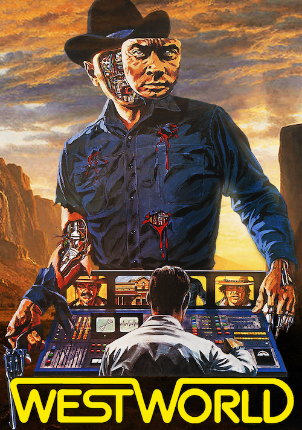
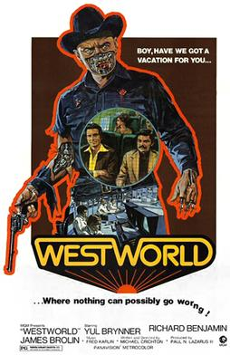

<!DOCTYPE html>
<html lang="en">
  <head>
    <meta charset="utf-8" />
    <meta name="viewport" content="width=device-width, initial-scale=1.0, maximum-scale=1.0, user-scalable=no" />

    <title></title>
    <link rel="stylesheet" href="dist/reveal.css" />
    <link rel="stylesheet" href="dist/theme/simple.css" id="theme" />
    <link rel="stylesheet" href="plugin/highlight/zenburn.css" />
	<link rel="stylesheet" href="css/layout.css" />
	<link rel="stylesheet" href="plugin/customcontrols/style.css">


    <script defer src="dist/fontawesome/all.min.js"></script>

	<script type="text/javascript">
		var forgetPop = true;
		function onPopState(event) {
			if(forgetPop){
				forgetPop = false;
			} else {
				parent.postMessage(event.target.location.href, "app://obsidian.md");
			}
        }
		window.onpopstate = onPopState;
		window.onmessage = event => {
			if(event.data == "reload"){
				window.document.location.reload();
			}
			forgetPop = true;
		}

		function fitElements(){
			const itemsToFit = document.getElementsByClassName('fitText');
			for (const item in itemsToFit) {
				if (Object.hasOwnProperty.call(itemsToFit, item)) {
					var element = itemsToFit[item];
					fitElement(element,1, 1000);
					element.classList.remove('fitText');
				}
			}
		}

		function fitElement(element, start, end){

			let size = (end + start) / 2;
			element.style.fontSize = `${size}px`;

			if(Math.abs(start - end) < 1){
				while(element.scrollHeight > element.offsetHeight){
					size--;
					element.style.fontSize = `${size}px`;
				}
				return;
			}

			if(element.scrollHeight > element.offsetHeight){
				fitElement(element, start, size);
			} else {
				fitElement(element, size, end);
			}		
		}


		document.onreadystatechange = () => {
			fitElements();
			if (document.readyState === 'complete') {
				if (window.location.href.indexOf("?export") != -1){
					parent.postMessage(event.target.location.href, "app://obsidian.md");
				}
				if (window.location.href.indexOf("print-pdf") != -1){
					let stateCheck = setInterval(() => {
						clearInterval(stateCheck);
						window.print();
					}, 250);
				}
			}
	};


        </script>
  </head>
  <body>
    <div class="reveal">
      <div class="slides"><section  data-markdown><script type="text/template"><!-- .slide: class="drop" data-background-opacity="0.5" data-background-image="624px-HypertextEditingSystemConsoleBrownUniv1969.jpg" -->
<div class="" style="position: absolute; left: 0px; top: 0px; height: 700px; width: 960px; min-height: 700px; display: flex; flex-direction: column; align-items: center; justify-content: center" absolute="true">

# Sliding Into Hypertext and the Web
</div></script></section><section  data-markdown><script type="text/template"><!-- .slide: class="drop" -->
<div class="" style="position: absolute; left: 0px; top: 0px; height: 700px; width: 960px; min-height: 700px; display: flex; flex-direction: column; align-items: center; justify-content: center" absolute="true">

But first, some dates to hang the narrative on


</div></script></section><section  data-markdown><script type="text/template"><!-- .slide: class="drop" -->
<div class="" style="position: absolute; left: 0px; top: 0px; height: 700px; width: 960px; min-height: 700px; display: flex; flex-direction: column; align-items: center; justify-content: center" absolute="true">

- 1983 - ARPANET switches over to TC/ICP; MILNET split off
- 1983 Domain Names system devised
- 1984 comes into effect: gov, .mil, .edu, .org, .net, and .com.
- 1986 NSF backbone is built; NSF, like DCA before it, limits use to 'approved' uses. Also decides to use TC/ICP 
- 1987 over 10 000 hosts now on 'the internet'
</div></script></section><section  data-markdown><script type="text/template"><!-- .slide: class="drop" -->
<div class="" style="position: absolute; left: 0px; top: 0px; height: 700px; width: 960px; min-height: 700px; display: flex; flex-direction: column; align-items: center; justify-content: center" absolute="true">

- 1988 commercial email allowed to be transported over NSFNet - commercialization of that infrastructure begins
- Senator Al Gore becomes interested in networks for research
- 1990 ARPANet shuts down
- 1991 Gore proposes, and sees it through, The High Performance Computing Act. This is the 'information superhighway' financing bill, which amongst other things funds the team that builds the first Webrowser (Mosaic, 1993; evolves into Netscape)
- 1991 web comes into existence; 1993 explodes into popular imagination
</div></script></section><section  data-markdown><script type="text/template"><!-- .slide: class="drop" -->
<div class="" style="position: absolute; left: 0px; top: 0px; height: 700px; width: 960px; min-height: 700px; display: flex; flex-direction: column; align-items: center; justify-content: center" absolute="true">


</div>

<aside class="notes"><p>Which means that we&#39;re going to have to talk seriously about hypertext. </p>
<p>Which we&#39;ll do in a minute.</p>
</aside></script></section><section  data-markdown><script type="text/template"><!-- .slide: class="drop" -->
<div class="" style="position: absolute; left: 0px; top: 0px; height: 700px; width: 960px; min-height: 700px; display: flex; flex-direction: column; align-items: center; justify-content: center" absolute="true">

## A Whistlestop Tour of Early Viruses et al.


notes:
And yeah, sure: let's talk about hacking, viruses and so on first. also: my own black hat adventures ca. 1986
</div></script></section><section  data-markdown><script type="text/template"><!-- .slide: class="drop" -->
<div class="" style="position: absolute; left: 0px; top: 0px; height: 700px; width: 960px; min-height: 700px; display: flex; flex-direction: column; align-items: center; justify-content: center" absolute="true">


</div>

<aside class="notes"><p>an automaton is one that examines its state, and then selects an action based on that state. in this work, von Neumann is essentially describing the <em>recipe</em> for how a program might reproduce itself. explicitly making a biological comparison.</p>
</aside></script></section><section  data-markdown><script type="text/template"><!-- .slide: class="drop" -->
<div class="" style="position: absolute; left: 0px; top: 0px; height: 700px; width: 960px; min-height: 700px; display: flex; flex-direction: column; align-items: center; justify-content: center" absolute="true">

First 'viruses' and 'worms' written mostly as experiments

Creeper - designed by Bob Thomas at BBN; it would copy itself onto connected computers. the first worm. 1971. 'I'M THE CREEPER CATCH ME IF YOU CAN'

Reaper - designed by Ray Tomlison, to seek out and eliminate Creeper. 1972
</div>

<aside class="notes"><p>virus: requires a host program to move around; it executes itself before the host program does what it is supposed to do. worm: self sufficient program on its own. Creeper wasn&#39;t malicious - it was mostly a &#39;I wonder if this will work&#39;. It would copy itself to a new machine, and delete itself on the old machine if it could.
Alan Davis, grad student at UIUC, devises a process for a PDP-11 computer: it would see if a copy of itself was running; if not, it would make a copy and start it; then it would see if disk space was available; if so, it&#39;d make a file that would fill that space, then start the process over again. If someone tried to save work, there&#39;d be no space; if they deleted something, the space would automatically fill up again. Yeah, this one is malicious. A similar virus called &#39;Rabbit&#39; spreads the following year. I do not know who is behind that one.</p>
<ul>
<li>some of these things spread because <em>people</em> share the host software - they ftp it to a new system, or later, it&#39;s on a floppy disc.</li>
<li>some of these things spread because they actively are looking for a connection</li>
</ul>
</aside></script></section><section  data-markdown><script type="text/template"><!-- .slide: class="drop" -->
<div class="" style="position: absolute; left: 0px; top: 0px; height: 700px; width: 960px; min-height: 700px; display: flex; flex-direction: column; align-items: center; justify-content: center" absolute="true">

ANIMAL - the first Trojan - 1975, by John Walker

- ANIMAL was a 20-questions style game, 'what animal am I thinking of?'
- secret program included in it called PERVADE; when game ran, PERVADE would examine the system for directories available to the user, and then copy ANIMAL to those directories
</div>

<aside class="notes"><p>A trojan is a virus hiding inside another program that executes as part of that program. The intent with ANIMAL wasn&#39;t malicious, supposedly. Just supposed to make it easier to distribute the game. Yeah. Ok.</p>
</aside></script></section><section  data-markdown><script type="text/template"><!-- .slide: class="drop" -->
<div class="" style="position: absolute; left: 0px; top: 0px; height: 700px; width: 960px; min-height: 700px; display: flex; flex-direction: column; align-items: center; justify-content: center" absolute="true">

<split>



</split>
1973 - Westworld, by Michael Crichton - features a virus as a pivotal plot point
</div></script></section><section  data-markdown><script type="text/template"><!-- .slide: class="drop" -->
<div class="" style="position: absolute; left: 0px; top: 0px; height: 700px; width: 960px; min-height: 700px; display: flex; flex-direction: column; align-items: center; justify-content: center" absolute="true">

Once the genie is out of the bottle, lots of virus/worms/trojans emerge

Often the motivation is curiosity - who *wouldn't* want to create artificial life, amirite?

But not always.
</div></script></section><section  data-markdown><script type="text/template"><!-- .slide: class="drop" -->
<div class="" style="position: absolute; left: 0px; top: 0px; height: 700px; width: 960px; min-height: 700px; display: flex; flex-direction: column; align-items: center; justify-content: center" absolute="true">

BRAIN BOOT SECTOR VIRUS - first IBM PC virus - 1986
- would essentially crash the machine during boot up

</div>

<aside class="notes"><ul>
<li>Basit and Amjad Farooq Alvi<ul>
<li>made software for the Apple IIe for heart monitoring</li>
<li>which was being pirated. They devised this virus to track and stop illegal copying. The message displayed gave the full contact details for the brothers, who if you paid them for the software would then remove the virus. Ransomware? Not quite - was meant to stop piracy of their IP. Someone ported the way the virus worked from the Apple to IBM (but kept the &#39;vaccination&#39; message). </li>
<li>a lot of software is distributed as shareware, pay-as-you-can, or freeware; lots of copying going on</li>
</ul>
</li>
</ul>
</aside></script></section><section  data-markdown><script type="text/template"><!-- .slide: class="drop" -->
<div class="" style="position: absolute; left: 0px; top: 0px; height: 700px; width: 960px; min-height: 700px; display: flex; flex-direction: column; align-items: center; justify-content: center" absolute="true">

The Morris Worm - 1988
- within 24 hours approximately 1/10th of connected machines (~ 6000) infected


</div>

<aside class="notes"><ul>
<li><p>1988 - Remember, by this time, the internet <em>is</em> a thing, accessed through a variety of text-based programs, and becoming commercially important</p>
</li>
<li><p>November 2, 1988, 8.30 pm, a program starts spreading; emerges first at MIT</p>
</li>
<li><p>Grinds computer to a halt. Multiple infection vecotrs- exploits loopholes in the code (&#39;backdoors&#39;) in email systems, exploits the &#39;FINGER&#39; command (for finding out who is online on a given machine or system, icky word), and other routes. Designed to hide. Targets a particular flavour of the widespread UNIX operating system</p>
</li>
<li><p>military systems, university systems slow to a crawl. emails delayed for day. no files destroyed, but massively disruptive, and expensive.</p>
</li>
<li><p>the programmer who created it had released it in error; he contacted friends almost immediately asking them to post anonymous messages around the web about how to delete the worm; but by this time it was too late and people didn&#39;t really spot the messages</p>
</li>
<li><p>one of the friends made a call to the New York Times (anonymously) with the warning, saying it was meant as a harmless experiment; the friend referred to the programmer by his initials, which enabled the reported to track the programmer down as Robert Tappan Morris at Cornell U. 23 years old.</p>
</li>
<li><p>FBI arrests him under our old friend the Computer Fraud and Abuse Act - found guilty in 1989, fined, probabition, 400 hrs community service.</p>
</li>
<li><p>This is the episode that <em>really</em> begins to prompt cybersecurity work, vis-a-vis the internet</p>
</li>
</ul>
</aside></script></section><section  data-markdown><script type="text/template"><!-- .slide: class="drop" -->
<div class="" style="position: absolute; left: 0px; top: 0px; height: 700px; width: 960px; min-height: 700px; display: flex; flex-direction: column; align-items: center; justify-content: center" absolute="true">

## The story so far

- the 1980s sees a growing awareness of 'connected' computing
- turning up in culture (eg WarGames; Terminator)
- commercialization of the government created infrastructure
- internetworking of private networks into that infrastructure
- common carriage of traffic (what is later called net neutrality) a feature
- Al Gore secures funding for another round of development, meant to expand access and foster more research
</div></script></section><section  data-markdown><script type="text/template"><!-- .slide: class="drop" -->
<div class="" style="position: absolute; left: 0px; top: 0px; height: 700px; width: 960px; min-height: 700px; display: flex; flex-direction: column; align-items: center; justify-content: center" absolute="true">

Text Interfaces Kinda Suck


</div>

<aside class="notes"><p>But how else do you deal with infoglut? Apple is better (for reasons we&#39;ll see below) but they&#39;re not as popular as other systems</p>
</aside></script></section><section  data-markdown><script type="text/template"><!-- .slide: class="drop" -->
<div class="" style="position: absolute; left: 0px; top: 0px; height: 700px; width: 960px; min-height: 700px; display: flex; flex-direction: column; align-items: center; justify-content: center" absolute="true">


</div>

<aside class="notes"><p>Common Place Books earlier; image from Chris Aldrich boffosocko, John Stuart Mill&#39;s commonplace book? 
Pre WWII devices that used microfilm and photoselector machines to retrieve info (but still based on a kind of index)</p>
</aside></script></section><section  data-markdown><script type="text/template"><!-- .slide: class="drop" -->
<div class="" style="position: absolute; left: 0px; top: 0px; height: 700px; width: 960px; min-height: 700px; display: flex; flex-direction: column; align-items: center; justify-content: center" absolute="true">

<split>


</split>
</div>

<aside class="notes"><p>Several <em>folders</em> held in here, into which one places <em>files</em> (collections of papers, arranged in order)</p>
</aside></script></section><section  data-markdown><script type="text/template"><!-- .slide: class="drop" -->
<div class="" style="position: absolute; left: 0px; top: 0px; height: 700px; width: 960px; min-height: 700px; display: flex; flex-direction: column; align-items: center; justify-content: center" absolute="true">

<split>


Jorge Luis Borges, Garden Of Forking Paths (spanish, 1941; English, 1948)

"This web of time - the strands of which approach one another, bifurcate, intersect or ignore each other through the centureis - embraces every possibility"
</split>
</div>

<aside class="notes"><p>describes a novel where all possible outcomes exist concurrently. Finnegan&#39;s Wake. Ulysses. For a bit less highbrow, let&#39;s think about choose your own adventure</p>
<p>Any text that refers another is a kind of hyper text</p>
<p>The Talmud is hypertext</p>
<p>An academic article is a hypertext</p>
<p>In hypertext, the text itself has <em>depth</em></p>
</aside></script></section><section  data-markdown><script type="text/template"><!-- .slide: class="drop" -->
<div class="" style="position: absolute; left: 0px; top: 0px; height: 700px; width: 960px; min-height: 700px; display: flex; flex-direction: column; align-items: center; justify-content: center" absolute="true">

In computerized hypertext

- some act of selection enables you to pass to another level or another related concept

- a formalization and action based on a *relationship*

- the relationship itself has some capacity to *act*
</div></script></section><section  data-markdown><script type="text/template"><!-- .slide: class="drop" -->
<div class="" style="position: absolute; left: 0px; top: 0px; height: 700px; width: 960px; min-height: 700px; display: flex; flex-direction: column; align-items: center; justify-content: center" absolute="true">


Ted Nelson, Xanadu

- coins the word 'hypertext'
- never built
- demo [here](https://xanadu.com/xanademos/MoeJusteOrigins.html) | [Long read in Wired, 1995](https://www.wired.com/1995/06/xanadu/)
</div>

<aside class="notes"><p>Nelson - philosopher, entrepreneur, professor, consultant, administrator. Friends with Douglas Engelbart, as it happens.</p>
<p>Maggie Appleton: &#39;Our preconceived notions of what a link is, how it works, and what digital text is capable of threatens to overwrite the alternate history we&#39;re about to explore</p>
</aside></script></section><section  data-markdown><script type="text/template"><!-- .slide: class="drop" -->
<div class="" style="position: absolute; left: 0px; top: 0px; height: 700px; width: 960px; min-height: 700px; display: flex; flex-direction: column; align-items: center; justify-content: center" absolute="true">

<div align="left">

A *pattern language*, per [Maggie Appleton](https://maggieappleton.com/xanadu-patterns) helps us approach questions like:

-   How do we structure information and build relationships between pieces of data that help us see them across contexts, and clarify understanding?
-   How do we build systems that allow people to collaborate on shared documents without losing authorship? How do we credit and compensate authors based on their contributions?
-   How do we bring ideas and data from a variety of sources into conversation with our own, while leaving a clear trail back to the origin?

</div>
</div>

<aside class="notes"><p>Project Xanadu - while never built - was influential in that its patterns for dealing with these issues influence subsequent designs. Like Bush&#39;s memex - which Nelson cites - he provides a template for channeling the imagination in the context of these increasingly more powerful machines</p>
</aside></script></section><section  data-markdown><script type="text/template"><!-- .slide: class="drop" -->
<div class="" style="position: absolute; left: 0px; top: 0px; height: 700px; width: 960px; min-height: 700px; display: flex; flex-direction: column; align-items: center; justify-content: center" absolute="true">


- Maggie Appleton
</div>

<aside class="notes"><p>some of its patterns:</p>
<ul>
<li>jump links versus visible links (visible better!)</li>
<li>parallel documents</li>
<li>transclusion</li>
<li>stable addresses for <em>blocks</em> of text</li>
<li>annotation overlays</li>
<li>multiple views</li>
<li>micropayments</li>
</ul>
<p>If you transclude in Obsidian, the paragraph you point to gets an address; many current note taking apps feature block-based approaches</p>
</aside></script></section><section  data-markdown><script type="text/template"><!-- .slide: class="drop" -->
<div class="" style="position: absolute; left: 0px; top: 0px; height: 700px; width: 960px; min-height: 700px; display: flex; flex-direction: column; align-items: center; justify-content: center" absolute="true">

<div align="left">

Nelson: "HTML is precisely what we were trying to PREVENT— ever-breaking links, links going outward only, quotes you can't follow to their origins, no version management, no rights management."

</div>
</div>

<aside class="notes"><p>Lanier: &quot;A core technical difference between a Nelsonian network and what we have become familiar with online is that Nelson&#39;s network links were two-way instead of one-way. In a network with two-way links, each node knows what other nodes are linked to it. ... Two-way linking would preserve context. It&#39;s a small simple change in how online information should be stored that couldn&#39;t have vaster implications for culture and the economy.&quot;</p>
<p>Nelson, <a href="https://xanadu.com.au/ted/TN/WRITINGS/TCOMPARADIGM/tedCompOneLiners.html">https://xanadu.com.au/ted/TN/WRITINGS/TCOMPARADIGM/tedCompOneLiners.html</a>
Jaron Lanier, <em>Who Owns the Future</em>, New York: Simon &amp; Schuster, 2013. p. 227</p>
</aside></script></section><section  data-markdown><script type="text/template"><!-- .slide: class="drop" -->
<div class="" style="position: absolute; left: 0px; top: 0px; height: 700px; width: 960px; min-height: 700px; display: flex; flex-direction: column; align-items: center; justify-content: center" absolute="true">

<div align="left">

"What we're now seeing is the ad-hoc, decentralised manifestation of Xanadu in bits and pieces.

People are building Xanadu without knowing what Xanadu is.  

Which is the essence of a good pattern language; true patterns evolve naturally within systems, and are found rather than crafted." - Maggie Appleton

</div>
</div>

<aside class="notes"><p>But some people <em>did</em> develop workable hypertexts that featured many of these kinds of things</p>
</aside></script></section><section  data-markdown><script type="text/template"><!-- .slide: class="drop" -->
<div class="" style="position: absolute; left: 0px; top: 0px; height: 700px; width: 960px; min-height: 700px; display: flex; flex-direction: column; align-items: center; justify-content: center" absolute="true">

<div class="mermaid">
graph TD;
    A(Bush- the Memex, 1945) --> B(Ted Nelson- Project Xanadu, 1965ish);
    A(Bush- the Memex, 1945) --> C(Douglas Engelbart- NLS, 1968);
    B-->D(Andries van Dam, Ted Nelson, Students- Hypertext Editing System, 1967);
    D-->E(Andries van Dam,Bob Wallce- File Retrieval and Edity System, 1968);
    C-->E;
    E-->F(Norman Meyrowitz, Nicole Yankelovich, Nancy Garrett, Karen Caitlin- Intermedia)
    C-->G(Wendy Hall, Andrew Foutain, Hugh Davis, Ian Heath- Microcosm)
    B-->G

</div>
</div>

<aside class="notes"><p>THERE WERE MANY HYPERTEXT SYSTEMS DEVELOPED. THIS IS JUST A SAMPLE</p>
<p>links to documents, jumps to <em>related</em> documents in FRESS; HES had a back button (NASA used HES to document Apollo missions; FRESS used to teach poetry in 75,76)
Intermedia - &quot;Link information is stored by the system apart from the source text. More than one such set of data can be kept, which allows each user to have their own &quot;web&quot; of information. Intermedia has complete multi-user support, with three levels of access rights: read, write, and annotate&quot;. Microcosm kept the links in a separate database, allowing real-time automatic updating if locations moved</p>
</aside></script></section><section  data-markdown><script type="text/template"><!-- .slide: class="drop" -->
<div class="" style="position: absolute; left: 0px; top: 0px; height: 700px; width: 960px; min-height: 700px; display: flex; flex-direction: column; align-items: center; justify-content: center" absolute="true">

Microcosm

- 1986 BBC produces a new Domesday Book - on laser disc
- interactive explorations, with links & a pointer; [demo from 1991](https://www.youtube.com/watch?v=DF9oAwUgmKo)
- inspiration for Wendy Hall, U Southampton
</div>

<aside class="notes"><ul>
<li>The Domesday Discs had crowdsourced memories and stories, pictures and video - tremendous multimedia</li>
<li>at Southampton, CS dept not interested in her work on multimedia; moves to U Michigan discovers this is called &#39;hypermedia</li>
<li>eventually returns to Southampton in time for the donation of Mountbatten&#39;s papers (war hero, assinated in 1979 by IRA)</li>
<li>archive had film, photo, sound, no linear sequence of material, archivists were despairing how to archive it</li>
<li>by 1989 they had a hypermedia system running that interwove the materials in the archive - multimedia navigation, database of links that new what was connected, using the metadata about the links to foster new kinds of information. the link wasn&#39;t in the document, it was in the linkbase and it overlaid all of the materials. Where the archives mention Ghandi, the linkbase contains the idea of Ghandi, thus one link actually ties to multiple materials. Evans: &#39;for every name, for every idea, for every linkable thing,  a single repository of supplementary material updated by everyone in the world, filtered based on parameters determined by the user&#39;</li>
<li>a link could point to multiple places at once, and new links could be generated on the fly. The value was on the associations, not the documents</li>
</ul>
</aside></script></section><section  data-markdown><script type="text/template"><!-- .slide: class="drop" -->
<div class="" style="position: absolute; left: 0px; top: 0px; height: 700px; width: 960px; min-height: 700px; display: flex; flex-direction: column; align-items: center; justify-content: center" absolute="true">

Intermedia - connected five different applications into a 'scholar's workstation' Nicole Yankelovich, Nancy Garrett, Karen Caitlin; Apple nicks elements of the design

-Sun Microsystems - Link Service, developed by Amy Pearl

-Symbolics - Symbolics Document Examiner by Janet Walker
</div>

<aside class="notes"><p>Hypermedia a largely new field, and open to scholars from outside CS.</p>
<p>many hypermedia/hypertext systems developed in the 80s, striking preponderance of women involved. A key thought about all these was how best to organize information, surface new information?</p>
<p>Evans, discussing how Marshall argues that the process of writing - making notes - involves throwing things out as your ideas change: Evans argues hypermedia is &#39;software for changing your mind&#39;</p>
</aside></script></section><section  data-markdown><script type="text/template"><!-- .slide: class="drop" -->
<div class="" style="position: absolute; left: 0px; top: 0px; height: 700px; width: 960px; min-height: 700px; display: flex; flex-direction: column; align-items: center; justify-content: center" absolute="true">

-Xerox - Cathy Marshall, works on NoteCards, subsequently develops Aquanet and Viki - 1984
- a very similar product becomes bundled with Apple in 1987, 'HyperCard', 1987
- [Ars Technica on HyperCard](https://arstechnica.com/gadgets/2019/05/25-years-of-hypercard-the-missing-link-to-the-web/)

<split>


</split>
</div>

<aside class="notes"><p>Marshall comes up with a system that imagines information on notecards with hypertextual linking, where cards could be chained together into sequences, or mind maps, or collections; part writing tool, part information browser. Marshall called it an &#39;idea browser&#39;. They actually designed it for use in Intelligence analysis (so that the premises on which policy was built could be examined.) Intelligence services never use it. Used throughout PARC though</p>
<p>I was part of a project in about 1995 using hypercard to try to publish an archaeological excavation. I didn&#39;t understand what I was tasked to do.</p>
<p>Notecards begets &#39;Aquanet&#39; (after haircare product, holds knowledge in place), Viki (uses a spatial metaphor). These tools were more about information management; they were actual environments - places - that helped structure thinking, &#39;systems that model - and more important, change-our minds&#39;.</p>
</aside></script></section><section  data-markdown><script type="text/template"><!-- .slide: class="drop" -->
<div class="" style="position: absolute; left: 0px; top: 0px; height: 700px; width: 960px; min-height: 700px; display: flex; flex-direction: column; align-items: center; justify-content: center" absolute="true">

Meanwhile, over in Europe


<small>
"HyperText is a way to link and access information of various kinds as a web of nodes in which the user can browse at will. It provides a single user-interface to large classes of information (reports, notes, data-bases, computer documentation and on-line help). We propose a simple scheme incorporating servers already available at CERN... A program which provides access to the hypertext world we call a browser... " Tim Berners-Lee , R. Cailliau. 12 November 1990, CERN

[link to original proposal html'd](https://www.w3.org/History/1989/proposal.html)

</small>
</div>

<aside class="notes"><p>proposes it in 1989; system working by end of 1990; software (webserver) made available to other research institutions in January 1991, general public by August. I will note that no proposal so sparse would pass through peer review/sshrc these days, sigh...</p>
</aside></script></section><section  data-markdown><script type="text/template"><!-- .slide: class="drop" -->
<div class="" style="position: absolute; left: 0px; top: 0px; height: 700px; width: 960px; min-height: 700px; display: flex; flex-direction: column; align-items: center; justify-content: center" absolute="true">

December 1991 - Hypertext '91, San Antonio, Texas


</div>

<aside class="notes"><ul>
<li>Tim Berners-Lee&#39;s paper is rejected, but he gets into the demo session, showing off a system he and CERN colleague Robert Caillau have built</li>
<li>system developed to help manage information management at the CERN campus</li>
<li>looked a bit like NoteCards - pages connected by links</li>
<li>main difference to most hypertext systems of the day - pages could be distributed on different computers; links were one way.</li>
<li>they make their system work with the academic internet rather than on a single machine or LAN</li>
</ul>
</aside></script></section><section  data-markdown><script type="text/template"><!-- .slide: class="drop" -->
<div class="" style="position: absolute; left: 0px; top: 0px; height: 700px; width: 960px; min-height: 700px; display: flex; flex-direction: column; align-items: center; justify-content: center" absolute="true">


</div>

<aside class="notes"><p>Tim Berners Lee - his vision of hypertext features one-way links only; and he figured the document would be the atomic unit of thought, hence urls point to <em>pages</em> </p>
<p>since the links are not bidirectional, link rot and decay is inevitable</p>
<p>Hypertext attendees not impressed. Berners Lee mostly ignored. REquirement of internet connection was still very costly, and the &#39;hypertext&#39; as implemented was not even as sophisticated as Engelbart&#39;s original demo.</p>
<p>By hypertext &#39;93 more than half the demos were web based; by hypertext &#39;94 Berners Lee gives the keynote address.</p>
</aside></script></section><section  data-markdown><script type="text/template"><!-- .slide: class="drop" -->
<div class="" style="position: absolute; left: 0px; top: 0px; height: 700px; width: 960px; min-height: 700px; display: flex; flex-direction: column; align-items: center; justify-content: center" absolute="true">


[last few images via here, which has a bit of a different view on the conference](https://webdevelopmenthistory.com/1991-tim-berners-lee-trys-to-convert-the-hypertext-faithful/)
</div></script></section><section  data-markdown><script type="text/template"><!-- .slide: class="drop" -->
<div class="" style="position: absolute; left: 0px; top: 0px; height: 700px; width: 960px; min-height: 700px; display: flex; flex-direction: column; align-items: center; justify-content: center" absolute="true">

<div align = "left">
Clare Evans:

"Today, we mostly think of hypertext as being something related to the Web, rather than of the Web as a technically inferior manifestation of hypertext principles"

</div>
</div>

<aside class="notes"><p>But just like the early arpanet only became popular through a very minimal use of its capabilities - email - so too does hypertext only become popular through this minimal realization. But it pretty much nukes hypermedia as a research area. By 1994, a lot of the pioneering work done by people like Cathy Marshall is forgotten, ignored, reinvented. Amazing. By 1997, a separate Web Conference has emerged and scheduled at the same time as the hypertext conference.</p>
</aside></script></section><section  data-markdown><script type="text/template"><!-- .slide: class="drop" -->
<div class="" style="position: absolute; left: 0px; top: 0px; height: 700px; width: 960px; min-height: 700px; display: flex; flex-direction: column; align-items: center; justify-content: center" absolute="true">


Erwise browser, 1992. Runs on Unix, uses X Windows: thus limited reach
</div></script></section><section  data-markdown><script type="text/template"><!-- .slide: class="drop" -->
<div class="" style="position: absolute; left: 0px; top: 0px; height: 700px; width: 960px; min-height: 700px; display: flex; flex-direction: column; align-items: center; justify-content: center" absolute="true">


1993: Mosaic Browser is released & CERN open sources web protocols; for all intents and purposes the web is born
</div></script></section><section  data-markdown><script type="text/template"><!-- .slide: class="drop" -->
<div class="" style="position: absolute; left: 0px; top: 0px; height: 700px; width: 960px; min-height: 700px; display: flex; flex-direction: column; align-items: center; justify-content: center" absolute="true">

Hypermedia: constructive; to navigate it was to also forge the links that made things meaningful
Web: passive; to navigate it is to go where the paths have been made for you.
</div></script></section><section  data-markdown><script type="text/template"><!-- .slide: class="drop" -->
<div class="" style="position: absolute; left: 0px; top: 0px; height: 700px; width: 960px; min-height: 700px; display: flex; flex-direction: column; align-items: center; justify-content: center" absolute="true">

Next Week: Browsers, Lynx, Gophers, the 90s and the dot com boom/bust
</div>

<aside class="notes"><p>By one of the supercomputing centres funded by Al Gore&#39;s bill.</p>
<ul>
<li>the lynx text-based browser released in 1992.</li>
</ul>
</aside></script></section><section  data-markdown><script type="text/template"><!-- .slide: class="drop" -->
<div class="" style="position: absolute; left: 0px; top: 0px; height: 700px; width: 960px; min-height: 700px; display: flex; flex-direction: column; align-items: center; justify-content: center" absolute="true">

The web was a mistake.

Discuss.
</div></script></section></div>
    </div>

    <script src="dist/reveal.js"></script>

    <script src="plugin/markdown/markdown.js"></script>
    <script src="plugin/highlight/highlight.js"></script>
    <script src="plugin/zoom/zoom.js"></script>
    <script src="plugin/notes/notes.js"></script>
    <script src="plugin/math/math.js"></script>
	<script src="plugin/mermaid/mermaid.js"></script>
	<script src="plugin/chart/chart.min.js"></script>
	<script src="plugin/chart/plugin.js"></script>
	<script src="plugin/customcontrols/plugin.js"></script>

    <script>
      function extend() {
        var target = {};
        for (var i = 0; i < arguments.length; i++) {
          var source = arguments[i];
          for (var key in source) {
            if (source.hasOwnProperty(key)) {
              target[key] = source[key];
            }
          }
        }
        return target;
      }

	  function isLight(color) {
		let hex = color.replace('#', '');

		// convert #fff => #ffffff
		if(hex.length == 3){
			hex = `${hex[0]}${hex[0]}${hex[1]}${hex[1]}${hex[2]}${hex[2]}`;
		}

		const c_r = parseInt(hex.substr(0, 2), 16);
		const c_g = parseInt(hex.substr(2, 2), 16);
		const c_b = parseInt(hex.substr(4, 2), 16);
		const brightness = ((c_r * 299) + (c_g * 587) + (c_b * 114)) / 1000;
		return brightness > 155;
	}

	var bgColor = getComputedStyle(document.documentElement).getPropertyValue('--r-background-color').trim();
	var isLight = isLight(bgColor);

	if(isLight){
		document.body.classList.add('has-light-background');
	} else {
		document.body.classList.add('has-dark-background');
	}

      // default options to init reveal.js
      var defaultOptions = {
        controls: true,
        progress: true,
        history: true,
        center: true,
        transition: 'default', // none/fade/slide/convex/concave/zoom
        plugins: [
          RevealMarkdown,
          RevealHighlight,
          RevealZoom,
          RevealNotes,
          RevealMath.MathJax3,
		  RevealMermaid,
		  RevealChart,
		  RevealCustomControls,
        ],


    	allottedTime: 120 * 1000,

		mathjax3: {
			mathjax: 'plugin/math/mathjax/tex-mml-chtml.js',
		},
		markdown: {
		  gfm: true,
		  mangle: true,
		  pedantic: false,
		  smartLists: false,
		  smartypants: false,
		},

		mermaid: {
			theme: isLight ? 'default' : 'dark',
		},

		customcontrols: {
			controls: [
			]
		},
      };

      // options from URL query string
      var queryOptions = Reveal().getQueryHash() || {};

      var options = extend(defaultOptions, {"width":960,"height":700,"margin":0.04,"controls":true,"progress":true,"slideNumber":false,"transition":"fade","transitionSpeed":"default"}, queryOptions);
    </script>

    <script>
      Reveal.initialize(options);
    </script>
  </body>

  <!-- created with Advanced Slides -->
</html>
